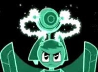

(日記とか言うモノ)
ああ、最近精神が安定してなくて困った。さっきまでえらく「鬱」な文章書いてたけど、さすがにアップする前にわれに帰って削除。人生なんて死ぬまでの暇つぶし。とか、けだるくなることダラダラと書いてました。それで発散できたのか、今はやや落ち着いたよーな気がする。
辛気くさいのはいかんね。
辛気くさいといえば、今CSのチェンネルNECOで「猫目小僧」やってんのね。だめだ～、見てらんない。やっぱ妖怪ものはドロロンえん魔くんでしょう。雪子姫～～～。
「猫目小僧」みてて思い出すのは「クラッチ・カーゴ」。どちらも動かないアニメ。
でもクラッチカーゴはクチだけ実写で、そこだけよく動く。 一方の猫目小僧はクチなんてまったく動かない。目とかはたまに動くけど。洋アニメはリップシンクロにこだわりがある、ってのは聞くけど、逆に言えばなぜ日本はリップシンクロにああもこだわらないんだろう？なぜだ？なぜだ？なんでどーでもいいんだ？視聴者もなんで気にならないんだ？
仮説：日本のアニメの場合、あくまでマンガを動かすことに執着するから。
マンガは台詞に合わせてクチが動いたりしないからねえ。むしろ「Ｘ」クチみたいにより抽象化する傾向に。で、むこうはもちろんマンガ原作もあるけど、アニメはアニメで独立していて、むしろショーとか小演劇とか（つまりは実写ね）のノリで作ってるんじゃないだろうか。
あ、デジャビュ。前にもこんなこと書いたような。でもって、きっとどっかのダレかも同じこと言ってるんだろうなあ。どーでもいいか、そんなこと。
いかんなあ、またテンション下がってきたか？
わかった、秋だからだな！センチメンタル（？）になってるんだきっと。うむ、それならそれで思惑にふけるのも季節感あっていいことかも。こう、まったりと落ち込んでさびしんぼうになろう。暗い曲でも聴いて、寂寥感に身をもだえさせよう。人恋しくなりながらも、孤独に浸ろう。ふふ、秋は人を詩人にさせる。
（なんか自分で言うとかなりダメ人間っぽい）
昨日は「ではおやすみなさい～」といった終わりかけのチャットに乱入。人様が眠りにつく時間に活動が活発になる夜行性動物でもうしわけない。
でも久々のチャットだけど、やっぱチャットって楽しいわ。文字だけ、かつ少ないワードでのコミュニケーションだから濃密になるんだろうか。うちにもチャット設置しようかなあ・・・いや、ダメだ。そんなことしたら死ぬ。
さて、そこで出た話題で「日本ニックは大丈夫か！」「今のニックには『萌』がたりない」てな話題。
CNの今の盛況さに比べニコロデオンはやや停滞ぎみ。CNも昔はリピートだらけでまったりとしてたらしいけど、きっとパワパフ地上波放送での効果ってけっこうあったんではないだろうかねえ。パワパフに惹かれてCNへってパターンってけっこうあるんじゃないかなあ。わからんけど。
てなわけで、「まんが日本昔ばなし！新エピソード！」なんてものウリにしてるバヤイじゃないですよ！（あ、ヘイアーノルドも新エピか・・・）ここは新シリーズで強化ですよ。もちろん目玉はティーンエイジロボットで決まりだ！いや、むしろこれはパワパフパターンで一回地上波でやってもらったほうがいいかも・・・
他にも本国ではいっぱい新アニメやってんだよな～。 ChalkZoneやらThe Fairly Odd Parentsとか。
そして・・・インベーダージム！！！！！
まったくのノーチェックだったのが残念だ。
どっかで見たような絵柄だと思ったら、やっぱりクリエイターはジョーネン・ヴァスケス！！
そーいや、アニメを手がけるなんて噂、昔どっかで聞いてたけど、まさかニックでやるようなやつとは思いもしなかったよ。いやむしろこの人だから、インディーズかと思ってた。
ヴァスケスの代表作 「JTHM」こと殺人狂ジョニー（Johnny the HOMICIDAL MANIAC）
これですよ！バーン！

殺して解して並べて揃えて 晒してやる。ってな感じですよ。人間失格、零式。
ゴスやアングラでカルト的人気をほこるヴァスケスが、子供向けアニメを？
わかんねーものだなあ、世の中って。さすがにここまでやらないだろうけど、インベーダージムも、きっとパンクでダークでクレイジーに違いない。勝手にそう思った。いやそう決まった。
そーいえば、この本を読んだのもちょうど去年の今頃。邂逅か。おもわずヴァスケスの本、また注文しちゃったい。でもこの人のマンガってば読むの疲れるんだよな。字が読みにくくて・・・
昨日の「虚」もなんとやら。東京でうろうろしてたらたんまりと欲望をもらって、あっというまに心のスキマなど埋まっていまいましたとさ。ど～～～～～ん！
ああ、これは良くない埋めかたなんじゃないだろうか・・・ほんとは優しさと幸せで埋めたかったのにっ。
久々に新宿トライソフトに行ってみたら、見違えるようでした。ていうか、なくなってる？
いや、ひっそりと営業しておりました。完全にソフマップにビルを乗っ取られた格好で・・表にちっちゃくたて看板があるだけ。これじゃ初めてきた人にはわからんだろうなあ・・・
パワパフの単行本、よく見たらいわゆる絵本版のサイズと同じでした。厚さもだいたいいっしょか。幼児向けはこのサイズていうセオリーでもあるんだろうか？
それよかCARTOON
CARTOONS #22ですよ。トライソフトに無かったのでブリスターまで足をのばす。ありました、ありました。でもわしが買ったら残り一冊。売れてるなあ。今日行ってよかった。バックナンバーはあいかわらず、ゴーストとジョニーの回が売れ残りまくり。人気ないねえ、ふふふふ・・・
今回はすでに「グリム＆イビル」じゃなくて「ビリー＆マンディ」。てなわけでコンカルネはなしよ、と。グリム達がボーリングに行く話。またもやペンシラーはMaxwell Atomsさん。でもインカーがちょっと・・・これパス絵だよ。こうして見ると、パス絵ってば線が均等になりすぎて味がなくてイマイチだなあ。カラリストは楽そうだけど。
むしろ一緒に載ってるカーレッジくんのほうが面白かった。カーレッジくんが結婚！！！！！！
ビックカメラとかソフマップにも寄りました。winノートなんか買っちゃったからMacの時よか物欲が強くなってる。それにしてもアレですね。最近のwinがらみの本ってば「裏なんとか」とか「DVDなんとか」とかそんなのばっかし、やたらあるねえ。こーいうのは「離乳食」みたいなオンラインドキュメントでしこしこスキルアップするもんなんだよ、ネットユーザーなら紙メディアなんか買うんじゃない！！！なーんつってな。やっぱ紙メディアは見やすいからいいよな。画面にも集中できるし。
で、おもわず「DVDバックアップ大全」なるムックを買ってしまいましたとさ。正直別に買う気はまったくなかったんだけども、その本の中でサンプルに使われてる画面に。。。パワパフが！！！・・衝動買いです。
そーいや、グルーブスカットまたやってら。
くるくるとんで
 回りながら、下から光りとともにコスチュームに・・
回りながら、下から光りとともにコスチュームに・・
それが全身に・・・どっかで見たような(笑)
変身完了！
キメポーズはなんかコギャルみたいだ・・・
そーいや、今度トータリースパイズもやるんだって、CN?
米CNですでに始まってたし、1クール分は地上波でもやってたから、いずれは・・とは思ってたけど。あれってばおフランス製なんだよなあ。世界のアニメはこれからどーなってしまうのか。
特になにがあったわけでもないのに、突然心が「虚」になる時があります。
「なにやってんだろ・・・オレ」
さっきまでハイだったのにな・・・・
これが長びくと「鬱」になるので注意せねばと思いつつも・・・・なあ。ふう。
日記書けば少しはマシになるかと思ったけど・・・いかんなあ。これだけ書くのに何分かかったことやら。
むしろこういう時は書かないほうがいいかもしれん。でも書いちゃった(笑)
お、少しは上ってきたか。
すべてを吹き飛ばすよう笑顔が欲しい。
忙しくなってきたので、現実逃避のお絵かき。
パワパフ絵でないのが続きすぎですか？
でも、 よく考えたら、スペースゴースト以外はちゃんとGIRLSってことで、あながち間違ってもいない（いいわけモード）
JINXの次に気になるRaiven。本編のほうじゃ壊れまくってるようだけど、「魔女」的な感じで描いてみた。似せなくてもいいというのも気楽なものだ。最初は魔女っ子メグちゃんのノンみたいだったんだが、多少Raivenぽくなったか？しゃらんらしゃらんらへいへいへへ しゃらんら！
それにしても、海外のお絵かきをみてもサイボーグは人気ねーなあ(笑)
やっぱり人気はスターファイヤで、次がロビンかレイヴンって気がする。しかし、一話しか出てないのにJinxがけっこうあるんだよね。人気人気。
現在windows XPと格闘中。
操作とか機能がどうこうよか、フィーリングを合わせるのが一苦労。XPともなるとMacのGUIとはまた違った別方向への進化を遂げてるようで、微妙に概念がずれてるのがぎくしゃくする。
中途半端に知ってるのもダメなのかも。
このウインドウのGUIなんとかならんかな？カラム表示とかできんのだろうか？慣れだろうかやっぱ。
あとウインドウそのものがアプリって概念がMacからだとちょっととまどう。
関係ないけど、http://teentitans.animationinsider.net/ こことかのTEEN TITANSのキャプチャー付きエピソードガイドとか見てるとmassangeanaさんのtaitansキャプチャーがいかに偏ってるかわかる(笑)
いや～好きですけどね、massangeanaさんのキャプ。同じものを見ていても視点が違うと世界が違ってみえるといういい例。このキャプでなければここまで興味もったか怪しいもの。
それにしても最近の海外の「お絵かき-OEKAKI-」とか見てると、日本の少年少女らが描くものとそう大差がなくなってきているのに気づく。まあ海外のCNでもバンバン日本アニメ流してるし、それをみて育ってるんだからやっぱりこうなるんだろう。今でこそTEEN TITANSが日本風タッチをウリにしてるけど、近い将来には「あたりまえ」のようになっていくんではないかと、複雑な心境。
おっとそういえば、今週に出るCARTOON CARTOONS #22はビリマンだっけか。忘れないよう注意せねば。パワパフと比べ一度入手しそこなうと再入手が難しいからなあ。
スペースゴーストの回はめちゃくちゃ売れ残ってるんだがな・・・・・（泣
プチ出張から帰って来た足で、windowsノートを買ってきました。
久々のwindows。でもないか。なにかとVirtual PCにはお世話になってるし。でもそこに入ってるのはエミュってこともあってwin95のまま。今度のは新製品だからXP。
えええええーーーーーくす ぴ～～～～～～～～
とりあえず、週末にはこれで打ち合わせしなきゃいかんので、今慣れるために格闘中。
しかし、95からXPに一気にとぶと・・・「なんじゃこりゃ～～～！」って感じですな。
わけわからん。いや、わかっちゃいるんだが、なんか余計な装飾というか制限が多くてあわてます。なんですか、このウインドウの表示は。便利なんだか余計なことなんだかよくわからんちん。
とりあえず、速攻であちこちカスタマイズしてだな・・・
いや、やめよう。実は前にこれで後悔したことがあったんだ。
winでもMacでもバリバリカスタマイズして使いやすくしてたら、他の人と話が合わなくて困ったことがあったんだよね。「ここはどうすればいいの？」「ああ、そこはアレを使ってああして・・」「えっ？そんなのないよ」みたいな。
ユーティリティーとか、キーカスタマイズとかなにやらやってると、全然別物になってたりして、さらに悪いことに標準での操作を忘れてたりするんだよね。パソコンってのはOSの違いなんてものはたいしたことない。自分のパソコンか否かってのが大きいんだ、といつも思います。あー人のパソコンってば使いづらい。
ま、そんなわけで、今のトコ、ソフトもなにも入れず、カスタマイズもせず標準のXPにまず慣れることにします。そうしないとXPの新機能とやらもまったく知らないでおわっちゃいそうだしな。それにしてもこの、IEライクなウインドウって使いやすいのか？いやいや、まずはコレに慣れなくちゃ。・・・・でも拡張子表示だけはしておこう。標準で「表示しない」設定になってるなんて信じられない・・・
あと、せめてDivXくらいは入れておこうっと(笑)
ちなみに買ったのは、パナソニックにレッツノートT2。10月に新製品が出るんですでに型落ちなんだけど、クロック数がちょっぴり増えただけなんで関係ないや。セントリーノ、セントリーノやほーやほー。無線LANはやっぱ便利だなと。でもさすがにビデオキャプチャーとかは辛いかなあ。再生はまあ問題なしって感じだけど。でもたった1kgってのはやっぱりめちゃ軽いわ。これなら持ち歩きの苦労しないな。ドライブは別売の同じくパナのポータブルDVDマルチドライブをセットで。ドライブ付きのW2が欲しかったんだけど、どっちみちDVD焼きドライブを買う予定だったからいらないしな。こっちもこんなにちっちゃくても焼けるなんてちょっと感動。あんまし速くはないけど、ちっちゃいの好きだからいいです。
あーでも、winのIEは速くていいなあ。（どうせすぐタグブラウザ入れるだろうけど）
デザインセンスも好き。この子達も再登場するかな？（してほしい）
さてさて、 そーいえばオフ会の時に、なんかカートゥーン以外でおもしろいページとかあります？とか聞かれたのを思い出した。こーいうのは難しい。実際ちょっと固まっちゃったし。「趣味」とかでもそうだけど、自分がおもしろいと思っていても、人もそうである場合ってのは少ない。
楽しいと思っていつも見てるけど、面白いと薦められるかどうかは微妙だな・・・とかついつい考えちゃう。
そのときはアレとかアレとか浮かんだんだけど、言えずじまい。だって「へぇ～」じゃなくて「ふーん」で終わりそうだったし。
まあでも、そうだなあ・・・ここなんてどうだろうか？
いきなりバカ。(笑)
過去の表紙Flashからさかのぼってみるとだんだん壊れてくさまがよくわかる。だからなにげにチェックしてたりする。
ま、ワシも人のことは言えないかもなあ。オフ会では店巡りもしたんですが、メンバーに隠れて（いや別に隠てはいないんだけどさ）買ったのがこの一品。全然カートゥーンと関係ないでやんの。
※灰皿です。念のため。
それにしてもだ。今回もまたタバコを吸うのはワシ一人・・・・・ご迷惑かけました。
ああ、ジェニーよこんなに喜んでいたのに・・・
人間の女の子の皮をかぶって、まるで人間のようにるんるん。・・・のはずだったが、博士はメカは天才でも裁縫はまるでダメだったのです・・・（とりあえず、「裁縫」ってとこでおかしなコトに気が付いてほしい）
えーと、そろそろティーンエイジロボットが見たくてしょうがなくなってきましたかね？どう？
いつ日本に来てもいいように隠れファンを増やしておきます。ニコロデオン様。
さて、今日は「レンとスティンピー＆チェブラーシュカ オフ会」でした。
雨のせいで予定していたチェブラーシュカ専門カフェ、通称「チェブカフェ」行きは中止となりました。残念。まあ、話では秘境の奥にある魔窟らしく、雨の中行軍するには難易度が高く、かつ行ってみても「開いているかどうかわからない」状態なうえ、ネタならともかくそれほどまでして・・・といったとこだったらしいので。ちょっと残念だが今思えば正解だったかも。
その分ゆっくりお話できたのが楽しかった。日本では数少ないレンスピサイト「OH JOY !!」の管理人のShinobu さんと常連さんのスポンジ郎さんのお話は楽しかったです。なにしろレンスピ自体ニックってこともあってなかなか話せる人が少ないからねえ。
途中でアナタはレン派？スティンピー派？って話題があったけど、私はダレがなんと言おうとレン派！
「アホちゃいまんねん パーでんねん！！！」
そうそう、なにより前々から気になっていたことが聞けてよかった。
「レンスピグッズは日本で見かけることはまれなのに、どうしてそんなにあるのか？」
コレ。これよ。特にレンスピのアメコミなんてまずない。あっても一冊2000円とかすんのよ。希少価値とはいえいきすぎ。でもこのサイト、コンプリートしてたりする。なぜに？どーして？どーやって？
答えは簡単なものでした。
うーん、やっぱり洋ものをゲットしはじめたら到達するのはココなのか。そーいやロクさんのプレイセットもそうだっけか。「やってできないことはない」らしいです。日本ebayが無くなったのが、ちょっと敷居が高いが。
あと、コミックの場合バラだと送料のほうがかさむから、まとめ売りを狙うとか、日本のオークションと比べペースがゆったりだがあせらない。などTipsも。
まあグッズはともかく、DVDのリージョン1のディスクとか欲しいなあ。リージョン規制でDVDはアマゾンでは買えないから。あー、でももしかしてそーいうの専門で扱ってくれる業者とかあるんかな？そのうち調べてみるか。
そうそう、最初原宿によったので、ブリスターによってPpG新刊を買いました。表紙の期待度に比べ反比例・・・しばらく傑作続きだった反動か。それから噂のPpG単行本もありました。日本の単行本と同じくらいのちっちゃなサイズ。うーん、特典ページなどなく、そのまんま5冊分が収録されてるだけ。広告がなくなって読みやすくはなっているが・・・さすがにこれでは衝動買いはできず、安いamazon入荷まで待つことにした。

久々のジェニー
月曜休みだと一週間が火曜から始まるので、なんだかいつにもまして一週間が過ぎてゆくのが早い。
もうビリマンなんだね！くはあ。
まあビリマンは逆に週１で助かったような気がする。毎日なんてやられたら、こっちがもちません。なにしろ今度はホームムービーズ祭りが待ってるわけだからな。最近のCNは動きが激しくてついてゆくのが大変です。
しかも、噂ではなにやら年末にまたデカイ山が待ってるとか。
てっきりこれはホムビやデクスターの新作かと思ってたんだけど、もうやっちゃうし。スターウォーズは11月だし、あと何が残ってるのか検討もつきません。ま、まさか・・・・パワパフの新作が。
さすがにパワパフはまだまだエピソード数のストックが少ないからムリだと思うけど、もしかしたらいよいよサムライ・ジャックなんではないだろうか。などと妄想はつきない。
あ、そういえばジャックで思い出したけど、いつのまにか出来てましたねスターウォーズ・クローン戦争の公式ページ。
まだなーーーーんにもないけどな！
アンダーグラウンドは久々にパワパフファンにとっての祭だったような気がします。
録画失敗した回のUGガールズもなんとか気になる回くらいは見ることができました。
で、その興奮を忘れないうちに、ちょっとアンダーグラウンドに関するものを作ってみた。じっくり検証してからでもよかったんだろうけど、熱いうちにやっといたほうがいいと思ったんで。おかしなことを書いているようだったら、ゆっくり修正することとしてね。
でまあ、そうやってアングラに興奮している間に・・・・
massangeanaさんとこのTEEN TITANSコンテンツが更新されてた！！！！
解説ページ キャプチャーページ
レイヴンのイメージがどんどん崩れてゆく・・・(笑)
あのメンバーではクールでい続けるのはムリなのかぁ。おもしろいけど。
レイヴンとスターファイヤーの関係って、なんかバットマンのポイゾンアイビーとハーレィクインのコンビを思い起こさせる（クールな姉様と、脳天気アホ娘・・・最後はアホに引きずられる）。向こうのアニメーターも使いやすいんだろうなあ。
massangeanaさんとこの更新を見てると、パワパフの黎明期ってこんな感じだったんだろうか？となんとなく思う。まだ日本で放映されてなくとも一部のファンの間でのみ熱くなっていた、そんな感じ。私はパワパフ地上波終了後のブームが収まりつつあるころにPpGを知ってハマったので、その当時を知る人たちの感覚ってうらやましく思います。
毎月恒例のCN番組チェック。
ほほう、ついにデクスターとホームムービーズの新作か。デクスターズ ラボ エゴ･トリップもシアターでやりますね。でも、わざわざ「唯一の長編作」とか言わなくても。そりゃー、スクービー･ドゥーとかいっぱいあるけどさ。
で、やっぱりninjaに来たね、「御先祖様万々歳！」。ninjaのこと散々言ってたけど、これは好きなので録画だ。曲がいいんだよなあ。
ところで、週末に映画みたんですよ。アンダーグラウンドがあったせいで、ドタバタしてたけど、忘れないウチに書いとこう。
トルンカの「バヤヤ」
人形アニメ。トルンカは真夏の夜の夢が有名だけど、こっちのほうが面白かった。
人形の顔はなにも変わらないんだけど、演出ひとつでいろんな表情に見えるのが凄かったね。
主人公バヤヤは母の化身の神馬からもらった 聖なる鎧をまとい、三首ドラゴンに生け贄にされる三姉妹の姫を助けるためにドラゴンと戦うんだ。このドラゴンがすっげー。ドキドキ。しかも、首が増えるの！
スチールだけ見てるとなんてことない人形なんだけど、動くと、えらくかっこいい。姫たちもかわいいし。
でも、母のことを秘密にしとかなきゃいけないので、聖なる騎士がバヤヤ本人だということはあかせないんだ。姫たちも助けてくれて何も言わすにさっていった騎士が好きになるんだけど、正体がわからない。一方のバヤヤは城に下男として雇われた風来坊なんで、だれも気が付かない。そんなバヤヤも末娘の姫が好きなんだな。このすれ違いは定番だが演出のよさもあって、もどかしいんだ。
そんななか、姫たちの婚約者決めの日が。決められない姫たちは、候補者にむかってリンゴを転がし、たどりついた人を相手とすることに。で、末娘が転がすと、たまたまそこによっていたバヤヤの足下に！これは運命か！
わーい、ってよろこぶバヤヤだが、あこがれの騎士様に夢中な姫は、「イヤ」とかいって部屋に戻っちゃう。
バヤヤ、ガーン！！！ 僕なのに・・・ママン、正体バラしてもいい？ダメです。ガーン。
そのうちに騎士の武闘大会が開かれて、この勝者がまだ相手の決まってない末姫のお相手に。
騎士姿のバヤヤ、飛び入り参加でさっそうと登場！ドラゴン殺しの騎士だもの、余裕で優勝。
姫もわーい、あこがれの騎士さまだ！ってんで喜ぶんだが、今度はバヤヤが拒絶。姫ガーン。ショックで部屋に引きこもり。さて二人の愛はどーなるのか～～～～～！
うーん恋愛とはすれ違いの美学。真夏の夜の夢と比べてもドラマ性があるので、かなり楽しめました。
あと、宴会の席にクマ使いがきて、クマちゃんも登場するんだけど、思わず「ボスコフ・・・」とつぶやいてしまったよ。そうそう、この宴会の時に一瞬時が止まるんだけど、人形が止まるんですよ！人形を動かなくしただけで、あたりまえなんだが、その瞬間にアニメーションしてる人形には間違いなく「魂」が宿っていたんだと感銘した。
 ところで、これのヒロインは末の姫なんだけど、私は長女の姫がめっちゃ好みでした。
ところで、これのヒロインは末の姫なんだけど、私は長女の姫がめっちゃ好みでした。
なんか彼女ばかり目でおってましたよ。バヤヤも見る目がないよなあ(笑)
見てからしばらくたっちゃったので、かなりおぼろげなんだけど、こんな感じ。だったと思う。まあ、もし見たことある人で、全然違うよ！！！！と思っても、「スカポン太にはこう見えていた」みたいなことでよろしく。絶対長女の姫が一番かわいかったって！（末娘は、もっとはかなげな感じ）
今日は用事あって昨日のようにアングラにべったりというわけにはいかなかったんだけども、録画してあるからOK。明日にでもゆっくり見よう。
あれ？ビデオが巻き戻ってる？
ん、ちがうな、ぜんぜん動いてなかったんだ。あはははは、なーんだ。
録画大失敗ですか！マジですか
( ･∀･)・・・・・・・・・・・・・・・
モジョがバブルスの時のアレは・・・プリンセスの声は・・・やっぱ一挙6時間一回きりってのはリスクでかいよ・・・
むーっかつくぜ！ったく！（ってCN版モジョでは言わなかったのが一番の違和感とか思ってみたり）
（ ´Д⊂ヽ今日はマクラを涙にぬらして寝ます。うえええええん。
昨日日記やBBSのレスを書こうかと思ってたら、前日の（ていうか数日の？）睡眠不足がたたって、途中で失神。パソは電気はいったままなのに、気が付いたらベッドに。その後もずっとボーっとしてたんですが、なんとかアンダーグラウンドには意識が目覚めたのでよかったなり。
昨日のビリマンもよかったけど、とりあえす今日はやっぱりアンダーグラウンドでしょうなあ。
意外に悪くなかったCN版。でもテレ東版のほうが好き。
正直にいえばコレにつきる。やっぱ初期の衝撃とともに刷り込まれたモノってのは大きいわ。生まれたばかりのひな鳥が初めてみたものを親と思うのといっしょで、こればっかりはさすがに覆せないなあと思った。特に、もともとからCNを見ていたわけじゃないので。
総合的な印象としては・・・テレ東版のほうが・・・テンション高っ！！ ですか。
博士とか変人度はテレ東版のほうが高い気がします。
あとセリフが違うのは当然としても、気になるのが「マジシャン・ゾンビ」の回。CN版とテレ東版ではまるで逆なんだよね。テレ東版だとたしか「種も仕掛もなーし！」とか言ってたと思うのだが、UGでは「種があるんでーす」だったかな。どーしてこうなったんだろ？解釈や演出の違いだろうか。
とりあえず、回を重ねるごとにCN版のキャストもキャラをつかんできた感じがあったので、後半の明日の放送が楽しみである。全体の感想はそのときにでも。ていうか、BBSとか他でもベラベラ喋っちゃうだろうから、ここで書くまでもないかなと。
あ、そーいえば、パワパフの特集があるってんで買っちまったアニメージュの話でも書いとこう。今書かないと2度と書くことはないだろうから。アンダーグラウンドの話でした。内容は周知の事実。以上終わり。
トリビアで言えば、( -Д-) =3 ハァ～ ってとこか。一応マクラッケンさんの直筆絵のサインがプレゼントらしいよ。
「劇場版は失敗が許されないし、新しいことに挑戦するのが難しいといえる。僕はいろんなことに挑戦できるテレビシリーズが好きですね」というマクラッケンのコメントが感慨深い。
あと、ウーパス制作中にニコル オデオン（多分ニコロデオンのこと。アニメ雑誌やってんならもっと勉強しろ！翻訳したやつ）から来た先生に気に入られて、彼女がカートゥーンネットワークに移ったときに呼ばれたのがきっかけ。とか言ってますが、もとニックで今CNの彼女ってダレ？ゲンディに誘われたんじゃなかったのか？ちょっと謎。気になる。
眠田さんも解説かいてたけど、「洋の東西を問わずキャラクターって頭身がしだいに縮ますねえ」のコメントに笑い。そーいや、アラレちゃんも、クレヨンしんちゃんも・・・
ちなみに次回のアニメージュの特集はゲンディ版スターウォーズだそうで・・・もうカンベンしてくれ・・・
ようやくLycosの旧メールが移行された。遅いよ～。どこでも確認できるwebメールも便利だけど、やっぱ大切なメールはローカルに転送しといたほうがいいなあと思うようになりました。
でもメールのバックアップっても見返すことはほとんどないんだよなあ。情報は蓄積してゆくものなのか、それとも消費してゆくものなのか。まあでも、1、2年程度じゃそれほどでもなくとも、10年とかたっちゃうと「10年前の記録」ってのは重要になってくるものなんだよね。
HDレコーダーでsonyのコクーンってあるけど、評判はイマイチらしいね。なにしろ、記録したものがバックアップ出来ないんだもの。（アナログ出力して別でキャプすりゃいいんだけどさ、そりゃ意味ねーよな）
実際にDVDなりに書き出して保存しといたとこで、本当に見返すかどうかはあやしいが、その選択肢がないってのは問題だ。そりゃまあ、ビデオにとってたものなんて一回も見返してないものなんていっぱいあるよ。でも違うんだ、「しない」のと「できない」とでは大きく違う。
でも、映画館とかで「1回だけ見る」「今見逃したらもう見れないかもしれない」といったときの集中力も捨てがたい。
今の仕事朝までに仕上げて提出すれば、返事が来るのが夕方だから昼は多分ヒマだ。また映画でもみにいこうかね。途中で寝ないように注意しなきゃいかんけどな(笑)
で、帰ってきたら録画してあるビリマン観て、そして土日はアンダーグラウンド。充実した週末がおくれそうだ。
ビックオーのR・ドロシーちゃんと同じく、やっぱり強力磁石にはくっついちゃうジェニー。
くっつくほどの強力な磁力だったら、それ以前に電子機器がイカレちゃう気がするんですが、まあいいや。
ジェニーが日本語を話すってことで、ちょっと気になったんだけど、ジェニーの声をあてている人、「Janice Kawaye」さんなんですが・・・ジャニス・カワエ（川江？）日系人かしらん？
ここやここ見てみると、「Karate Kid（邦題ベストキッド）」ではタキ、「Potsworth & Co.」ではケイコと、日本人役が多い気がする。「Bump in the Night」つう番組ではリトルロボット役。（おお！）
で、もっと調べてみると・・ここに気になる記述が。もしかして本名は「カワエ ヒロミ」Σ(ﾟДﾟ)!?
なんとなく納得した夜でした。プチトリビア。
それはともかく、三河屋銀次郎さんとこのサイトの日記を見ていたら面白い記事が。
「ニンジャ・タートル」と名付けられたウイルスがあったらしい。
これぞカートゥーン系トリビア(笑)
古くからPCやってる人には超有名なウイルス「ミケランジェロ」（なつかしい・・ニムダと並んでウイルスの代名詞的存在だったなあ）。その別名が「ニンジャ・タートル」。こっちの名の命名者のセンスに惚れました。
“ミケランジェロ”だから“ニンジャ・タートル”なのかな？きっと、レオナルドやドナテロといった亞種もあったに違いない(笑)
ねむいでしゅ。また今週も早々忙しくなってきた。
それはともかく、今度仕事でwindowsを使わなきゃいけないハメになっていて、現在めぼしいものを物色中。出先での作業になるのでノートで決定。しかもいったりきたりなんで、軽いヤツ。ノートパソコンとはいえ、3kgとかするのはやっぱキツイ。
家では無線LANなんで、当然無線LAN内蔵がこのましい。で、せっかくだから、いろいろ遊びたいので、それなりのスペックも・・悩むほどでもないんだよな。選択肢は限られてくるし。
問題はドライブ付きかなしかってとこだが、さてどうすべえ。でも、DVDも焼けるモデルとなるとでっかく重くなっちゃうんで、DVD外付けで買うことになるだろう。となると、別にドライブなんてなくてもいいのか？
まあ、だいたい目星はつけてるんだけど、結局はふんぎりの問題なんだよな。値段もそれなりだからね。さてさて。
日本にくるのは当分先だろうに、気になってしかたがないティーンエイジロボット。
ニコロデオンの「オーイェイカートゥーンズ」で、そのパイロット版「My Neighbor Has a Teenage Robot」というのがあるのだが、改めて見返してみると、いろいろとデザインが変わってる。パワパフやビリマンもそうだけど、シリーズ化してからのほうがよりデザインが良くなり、かわいくなってる。
ちょっと比較してみようかね。
デザイン変更ってこともあって、シリーズ化したときにわざわざちゃんと1話目も作り直しているみたいね。
| My Neighbor Has a Teenage Robot | My Life as a Teenage Robot |
|---|---|
 こんな感じだったのが・・・ |
 こんなにキュートにヽ(´ー｀)ノ |
| けっこうイカツイ感じで、色も濃い。肩のパッドのようなパーツがあったり、スカート部分もボルトが。 足のモモの部分のパーツが棒のように細い。 手も青い。 |
色も薄くなり、よりなめらかで華奢なボディに。 足も一体化したようなフォルム。 手が白くなった。 なにより目が大きくキュートになった。 |
 お友達の兄弟も若干変わった。 |
兄さんは特に。よりデザイン化され、スッキリと。 |
 ロボットである自分をみてガックリ。 |
 同じシーンだが、よく見ると部屋がハイテク化されてる。 |
一番印象が変わったのはこの人かも。ジェニーの生みの親の女博士。 |
 かなりぶっとんだ人になったようだ。メガネに色はつくし、白衣も黄色に。 |
かなりオンボロな家だったことがわかる。 |
ジェニーのラインが柔らかくなったことがよくわかる。でも言うことは同じ。 「じゃあね、XJ-9」 「私はジェニーよ・・・・・・」 |
 戦闘形態。翼は蝶のような羽根だった。 |
 よりロボっぽくなった羽根。一応、四つ羽根らしき痕跡がのこってる。 |
 ツインテールビーム！！ |
 よりハデに、クールになった武装。アトムよかカッコイイと思うのですがどーですか？ |
 彼女は手足はいろんな形に変わるのです。ピコピコハンマー！！ |
 でも、なんか、凶悪になったような・・・ゲッターかおまえは。 |
こんなの作ってたら・・・また辛抱たまらなくなってきたよ・・ニコロデオン様～、スポンジボブやラグラッツの新作はいいから、こっちを早くやって～～～～。
多分9/28のオーイェイカートゥーンズで「My Neighbor Has a Teenage Robot」をやるから、興味もった人はチェック、チェック～。あ、13～27日は「ミーナと伯爵」ね。
金曜と言えばビリマンの日。そういえば、ガストリーのソデが半袖から長袖にかわってましたな。というよか、手袋が伸びたのか？これで完全に全身ラバーのボンテージに。ヘクターの組織に入る前から、ボンテージ服だったけど、あれは彼女の趣味なんだろうか？
ボスコフの過去話もあって、つくづくイビルのほうは壮大な物語。やっぱりボスコフはロシアの曲芸クマさんだったんだね。
そしてビックオーが最終回（だよね・・多分）。なんだか不可解で釈然としない終わり方。やっぱりあの時期のアニメだったんだなあと・・・確かにエヴァ以降流行ったけどさ、もう少しスッキリさせてよ、って感じ。
いまさらながら、録画しておいてスーパーマンの「消えたバットマン」を見る。
ちょっと評判良かったので、気になってとっておいたんだけど、こりゃおもしろいわ。バットマンに変装したスーパーマンのぎこちなさがイイ。こうしてみると、バットマンって姑息で凶悪だよなあ。出来ればバットマン姿で空飛んで欲しかった。ほら、バットマンの長年の夢じゃん、空飛ぶのって。ビヨンドは飛びまくりだけどさ。
改めて生身のくせにどんな強敵にもひるまずにやってきたバットマンの凄さを実感したよ。
で、バットマンだけれども、サンディエゴのコミコンで話題になってた「女バットマン」の話がいよいよビデオで出るみたいだね。色からしてどっちかつうとキャットウーマンみたいなんだが。
こちらのサイトでその予告編が見れる。
「ミステリー・オブ・バットウーマン」
おまけでこちらも
「バットマン：デッド・エンド」
こちらはファンというか新人監督が自分のプロモーションのために作った、いわゆる自主制作映画なんだけど、けっこう評判いいみたいだね。もちろん、DCとかに承認を得ずに勝手に作ったもんで一般上映は出来ないらしいんだけど、webでは見れます。ていうかwebのみ。ファイルがでっかいけどブロードバンドの人なら問題ないっしょ。なぜかエイリアンとプレデターがでちゃうとこもインディーズっぽくていい(笑)
イジー・トルンカを見てきた。チェコの人形アニメ作家で超有名な人。と、いってもその道では・・・ってことだけどな。チェブラーシュカを見てから、ちょっとばかし人形アニメに興味をもっていたとこでした。
見たのは代表作ともいうべき「真夏の夜の夢」と短編集。
「真夏の夜の夢」はすごいな。これは映画館で見たことが幸運だったと思わずにはいられない。初めは人形がこんなふうにアニメーションするんだー。と思ってたんだけど、途中から映像に見入ってしまってそんなことは忘れてしまいました。特に妖精の女王タイタニアが・・・いい。スゴクイイ。朧な瞳に、白い肌。薄い衣装からのぞくむっちりとした太股・・・ゲフンゲフン。いやいや、その神秘さと華やかさ、優がな動きに幽玄とした存在。たまらんね。登場シーンがまた見せ場で、長いマントをなびかせてしなやかに登場、そのマントは無数の妖精達がそれこそみっちりとまとわりついて支えてる！あれだけの人形を同時に動かすなんて、どれだけの労力がかかるんだろうか？とにかく豪華でした。あー、今でもまざまざと思い出せるよ。
でも、実は好きだったのは短編集のほうでした。
特に「電子頭脳おばあさん」最高！プリズナーNo.6やキン・ザ・ザを彷彿させるようなSF描写。この不可思議な未来描写がたまらなくいいです。女の子はスチールで見た時はそれほどでもなかったんだけど、アニメーションしたところを見ると、めっちゃカワイイんですわ。チェブラーシュカも騒ぐほどかわいいか？って思ってたんだけど、動いてるトコ見たら納得しましたね。やっぱアニメーションは動いてこそアニマが宿る。
他にも人形アニメと切り絵アニメの合成「二つの霜」も楽しかったなあ。霜の妖精の表情が楽しいんだ。
あと、「天使ガブリエルと鵞鳥夫人」もよかった。中世艶話なんだけどね。人形がこんなに色っぽいとは・・・ゾクゾクしました。
いやあ、堪能したなあ。
しばらく更新できなかったけど、無事復帰できたようです。でも、ftpのサーバーが変わるって言ってたのに、かわらないぞ？どーいうことだ？IDもまだ混乱ぎみだしなあ。前のメールボックスにあったメールがまだ転送されてこないし。
「更新できない」って理由で逆にちょっとしたお休み気分。この間にリニューアルでも・・とか思ってたけど、普通に遊んでました。
そのかいあってか、アンダーグラウンドのCMを見ることができました。
バブルス版と市長版両方。なにげにTOONAMIの時間帯まで出張してくれてたみたい。
市長版はどうやらロングバージョンと言われるやつで、他のガールズの声も聞けましたね。
Late Night Black & White を見た。ベティちゃん目当てだったけど、なにげにフィリックスが面白かった。無声だからちょっとキツイかな？と思ってたけど、フィリックスってば変な顔することが多くて面白かった。走るときは四つ足になるとこがポイント高い。
しかし、アレだな。日記とかこういうものって、ちょっと間があくとおっくうになっていけない。これがさらに数日とかあくと、更新が月２くらいになって、さらに月１・・そして更新しなくなってゆくんだろうね。継続は力なりとはよくいったもので、毎日数行でもやり続けるってのはすごいパワーがいることなんですねえ。